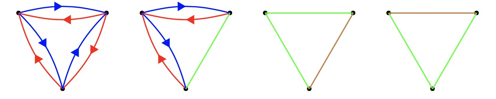
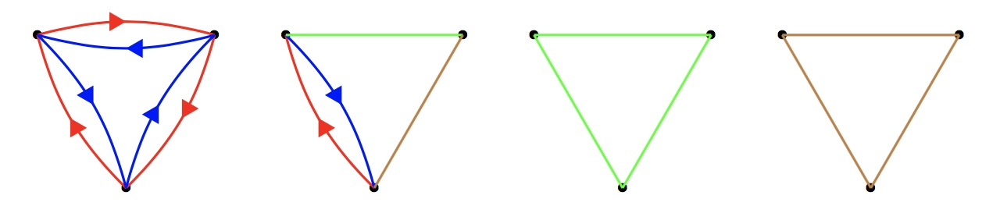

Project Euler 857
Project Euler 857
题目
Beautiful Graphs
A graph is made up of vertices and coloured edges. Between every two distinct vertices there must be exactly one of the following:
- A red directed edge one way, and a blue directed edge the other way
- A green undirected edge
- A brown undirected edge
Such a graph is called beautiful if
- A cycle of edges contains a red edge if and only if it also contains a blue edge
- No triangle of edges is made up of entirely green or entirely brown edges
Below are four distinct examples of beautiful graphs on three vertices:

Below are four examples of graphs that are not beautiful:

Let \(G(n)\) be the number of beautiful graphs on the labelled vertices: \(1,2,\ldots,n\).
You are given \(G(3)=24\), \(G(4)=186\) and \(G(15)=12472315010483328\).
Find \(G(10^7)\). Give your answer modulo \(10^9+7\).
解决方案
为对模型进行简化，对“红蓝型”点对只记录红边的方向（蓝边方向由此唯一确定为反向）；绿色与棕色仍按无向边处理。因此，每一对点可视为三种状态之一：有向型；绿；棕$。
因此，题目第的一条约束“一个环含红边当且仅当也含蓝边”可等价表述为：对任意环，若环中出现有向型边，则这些有向型边相对于环的行进方向必须同时包含顺向与逆向（不能全部同向）；若环中没有有向型边，则该条件自动满足。
定义关系 \(u \prec v\)：表示点对 ${u,v}$ 为有向型，且红边方向为 \(u\to v\)（等价地，蓝边方向为 \(v\to u\)）。
引理 1：\(\prec\) 具有传递传递性。若 \(u \prec v\) 且 \(v \prec w\)，考虑三角环 \(u\to v\to w\to u\)。 在该环的行进方向上，\(u\to v\) 与 \(v\to w\) 都贡献红。由第一条约束“有红当且仅当有蓝”，第三条边必须在此环上贡献蓝；因此只能是 \(u\to w\) 为红（因为环上经过的是 \(w\to u\)，对应蓝）。故 \(u \prec w\)。
所以 \(\prec\) 具有传递性。进一步，\(\prec\) 不可能存在有向环（否则沿有向环会出现“只红不蓝”的环），因此它是一个严格偏序。
引理 2：极小元层的全向外性质。设 \(S\) 为偏序 \(\prec\) 的极小元集合（即在有向型子图中入度为 \(0\) 的点集）。由于有向型子图无环，\(S\neq\varnothing\)。 对任意 \(x\notin S\)，沿前驱反复回溯必可到达某个极小元 \(s\in S\)，从而 \(s\prec x\)。
现取任意 \(a\in S\)。我们证明 \(a\prec x\)。 若不然，则边 \(a-x\) 不是 \(a\to x\)，只能是：\(x\to a\)，或绿边，或棕边。再看三角 \(a-s-x\)：
- \(a-s\) 不能是有向型（否则 \(a\) 或 \(s\) 会有入边，违背其极小性），因此是绿/棕；
- \(s\prec x\) 在环 \(a\to s\to x\to a\)（按顶点顺序看）中贡献红；
- 若 \(a-x\) 不是 \(a\to x\)，则该三角中不存在与之配对的蓝。
于是出现有红无蓝，违反第一条约束。矛盾。故必有 \(a\prec x\)。因此：任意 \(a\in S\) 都指向任意 \(x\notin S\)。
递归删除极小元层，得到唯一分层\(V = S_1 \sqcup S_2 \sqcup \cdots \sqcup S_k\)并满足：若 \(i<j\)，则 \(S_i\) 中每个点都以有向型指向 \(S_j\) 中每个点；每个 \(S_i\) 内没有有向型边（只能是绿/棕）。
第二条约束（不存在全绿/棕三角）因此只需在各层内部检查。
反过来，若给定上述有序分层，且层内仅有绿/棕并且无单色三角，则该图一定是 beautiful：对任意环，若经过不同层，则沿环的层号不可能单调（闭合必有“升”也有“降”），故有向型边相对环方向必同时出现顺向与逆向，即同时出现红与蓝；若环完全在同一层内，则无有向型边，第一条自动满足；任意全绿/全棕三角只能发生在同层，而同层已被禁止。故这类构造与 beautiful graphs 一一对应。
接下来进行层内的无向计数。定义 \(T(m)\)：\(m\) 个标号点上，仅允许绿/棕边，且不存在全绿三角与全棕三角的方案数。
- \(m\ge 6\)：由 Ramsey 定理 可知\(R(3,3)=6\)，任意二染色必有单色三角，故 \(T(m)=0\)；
- \(m=0,1,2,3\)：有\(T(0)=1,T(1)=1,T(2)=2,T(3)=6\)；
- \(m=4\)：等价于绿图及其补图都无三角，可行类型仅有 \(2K_2\)（\(3\)个），\(P_4\)（\(12\)个），\(C_4\)（\(3\)个），合计 \(T(4)=18\)；
- \(m=5\)：任一点的绿度不可能 \(\ge 3\)（否则在其三个绿邻点中必诱导绿三角或棕三角），对称也不可能 \(\le 1\)，故绿度恒为 \(2\)。于是绿图是 \(5\) 点 \(2\)-正则图，只能是 \(C_5\)。标号 \(C_5\) 数量为 \((5-1)!/2=12\)，故 \(T(5)=12\)。
最终，\(T(0,\dots,5) = [1,1,2,6,18,12].\)
令 \(G(0)=1\)。按第一层 \(S_1\) 的大小 \(m\) 分类：先从 \(n\) 个点中选出 \(S_1\)，层内有 \(T(m)\) 种，剩余 \(n-m\) 个点的结构为 \(G(n-m)\)，且层间方向由分层唯一确定。于是 \[ G(n) = \sum_{m=1}^{5} \binom{n}{m} T(m)G(n-m). \]
令\(g_n=\dfrac{G(n)}{n!},\)则\(\displaystyle g_n=\sum_{m=1}^{5}\frac{T(m)}{m!}g_{n-m}.\)代入 \(T(m)\) 得\(g_n=g_{n-1}+g_{n-2}+g_{n-3}+\dfrac{3}{4}g_{n-4}+\dfrac{1}{10}g_{n-5}, n\ge 5.\) 初值：\(g_0=1,g_1=1,g_2=2,g_3=4,g_4=\dfrac{31}{4}.\)回代即可计算得\(G(n)=n!g_n.\)
代码
1 | MOD = 10**9 + 7 |